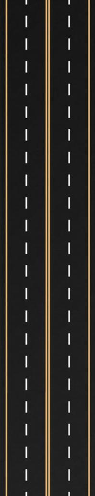

Story
Every Monday and Wednesday, I make my way from my dorm to my communications lab class, passing through the highline. Before settling into my seat, I make a quick pit stop at the campus coffee shop, D2, to grab a cup of Iced White Mocha. With my coffee in hand, I am ready to take on the day's lesson. It's a simple routine, but one that helps me start my day on the right foot.